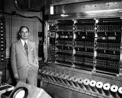
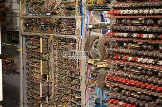

|
First-Generation Computers (approximately 1946–1957)
The first computers were enormous, often taking up entire rooms. They were powered
by thousands of vacuum tubes—glass tubes that look similar to large light bulbs—which
needed replacing constantly, required a great deal of electricity, and generated a lot of heat.
First-generation computers could solve only one problem at a time because they needed to
be physically rewired with cables to be reprogrammed , which typically took
several days (sometimes even weeks) to complete and several more days to check before
the computer could be used. Usually paper
punch cards and paper tape were used for
input, and output was printed on paper.
Two of the most significant examples
of first-generation computers were ENIAC
and UNIVAC. ENIAC,
was the world’s first large-scale, general
purpose computer. |
 FIRST-GENERATION COMPUTERS
First-generation computers, |
|
VACCUM TUBES: A vacuum-tube computer, now termed a first-generation computer, is a computer that uses vacuum tubes for logic circuitry. While the history of mechanical aids to computation goes back centuries, if not millennia, the history of vacuum tube computers is confined to the middle of the 20th century. Lee De Forest invented the triode in 1906. The first example of using vacuum tubes for computation, the Atanasoff–Berry computer, was demonstrated in 1939. Vacuum-tube computers were initially one-of-a-kind designs, but commercial models were introduced in the 1950s and sold in volumes ranging from single digits to thousands of units. By the early 1960s vacuum tube computers were obsolete, superseded by second-generation transistorized computers. |
 |